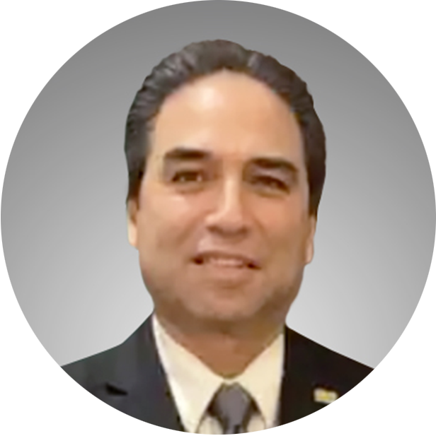
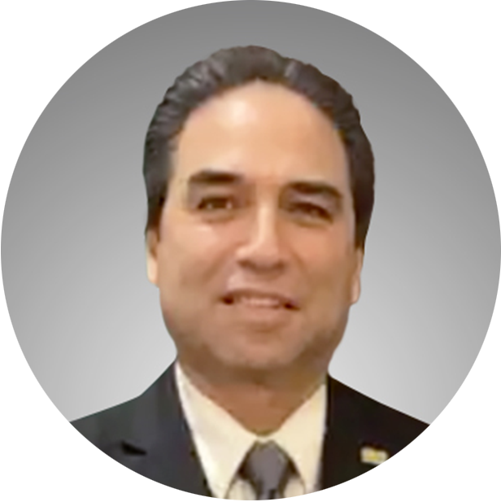
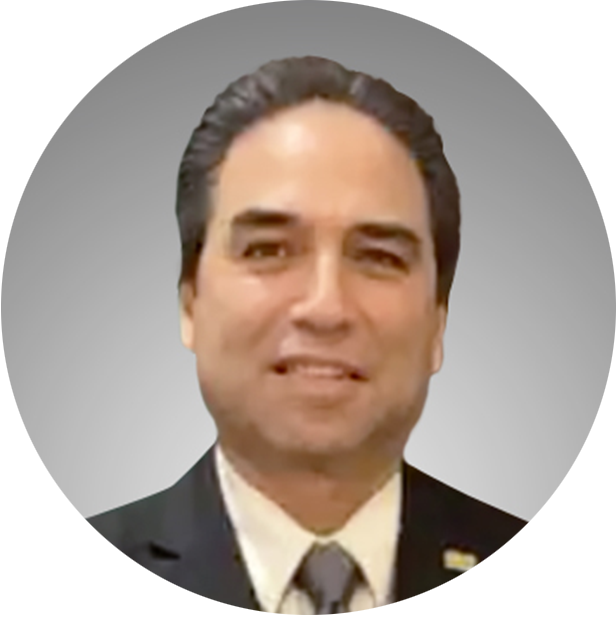
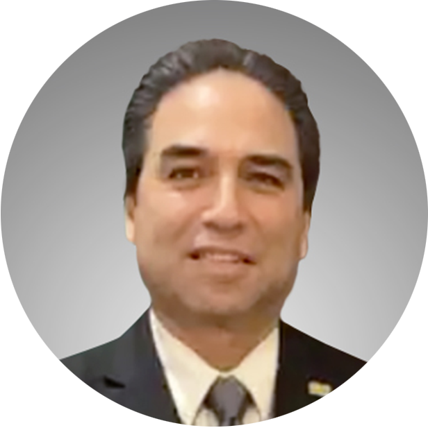
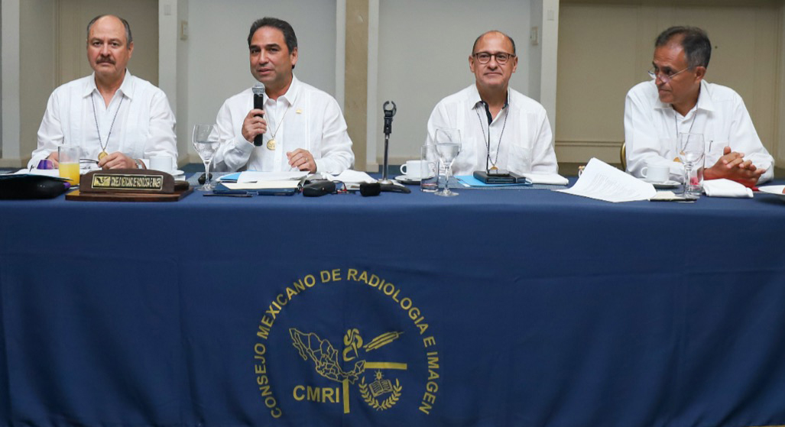

Dr. David Fdo. Pérez Montemayor
Presidente del Consejo Mexicano
de Radiología e Imagen A.C.
 

Dr. David Fdo. Pérez Montemayor
Presidente del Consejo Mexicano
de Radiología e Imagen A.C.
Historia
El 30 de enero de 1975 se funda legalmente el Consejo de Radiología, como Consejo Mexicano de Radiodiagnóstico y Radioterapia. El 24 de noviembre de 1986 se separa la especialidad de Radioterapia y se cambia el nombre por Consejo Mexicano de Radiología e Imagen.
A pesar de que la especialidad de Radiología inicia en 1895, con el descubrimiento de los Rayos-X por el físico alemán Wilhem Conrad Roentgen, el desarrollo y la evolución de la imagen ha crecido a pasos agigantados en los últimos años y es en la actualidad parte de la medicina del futuro.
La evolución de toda esta tecnología nos permite hacer diagnósticos oportunos y tempranos, siendo imperativo que todos los médicos radiólogos estén al día y actualizados en los avances para garantizar la mejor atención a la población.
Nuestra principal labor es contribuir con la preparación óptima de los radiólogos y ratificar los conocimientos que debemos seguir teniendo durante toda nuestra práctica. Esto es posible por la confianza que se deposita en nosotros, por el Comité Normativo Nacional de Consejos de Especialidades Médicas (CONACEM), que es el órgano rector que avala los 47 diferentes Consejos de Especialidades de nuestro país.
El papel del Dr. Guillermo Santín
Un pilar fundamental de la Radiología mexicana fue el Dr. Guillermo Santín García, especializado en la Universidad de Michigan y primer extranjero admitido al examen del American Board of Radiology. Al regresar a México en 1947 es invitado por el rector de la UNAM, el Dr. Salvador Zubirán, a impartir la asignatura de radiología en la Facultad de Medicina.
El Dr. Santín fue el presidente fundador del Consejo Mexicano de Radiodiagnóstico y Radioterapia y con él inició formalmente la evaluación de cientos de médicos radiólogos, que desde entonces procuran tener una educación médica continua, para estar siempre con conocimientos actualizados
Un logro importante para el Consejo Mexicano de Radiología e Imagen fue contar con el aval de la Academia Nacional de Medicina, proponiendo que esta tomara el papel de avalar la idoneidad de todos los Consejos de Especialidad en México; ahora todos los Consejos tienen el reconocimiento y la vigilancia de idoneidad por parte del CONACEM.
El primer examen de certificación se realizó en noviembre de 1976 y desde entonces, a pesar de muchos contratiempos externos como los temblores o la pandemia, el CMRI no ha dejado de evaluar a todos los radiólogos que han querido certificarse y recertificarse, para comprobar sus capacidades al ejercer bajo los estándares necesarios.
Las calificaciones agregadas
A medida que los nuevos métodos de imagen llegaron, surgió la necesidad de enfocar trabajos, investigación y tiempo en una sola área de interés, se agregaron las subespecialidades y el CMRI tuvo que adaptarse a estos cambios.
En 2001 surgen las calificaciones agregadas de imagen de mama y radiología pediátrica, estas fueron las primeras avaladas por CONACEM, para que posteriormente se instituyeran la de Radiología vascular e intervención, neurorradiología, imagen del sistema musculoesquelético y terapia endovascular neurológica.
En julio de 1975 se habían certificado a 130 radiólogos en todo el país. En la actualidad hasta marzo de 2022 tenemos 6,044 radiólogos certificados en la especialidad de Radiología e Imagen.
Esta certificación es un requisito indispensable para presentar un examen y obtener la acreditación de calificación agregada. De todos los radiólogos certificados en Radiología e Imagen, 627 tienen la calificación agregada en mama; 65, en pediatría; 141, intervención; 73, en neurorradiología; 64, en musculoesquelético y 13, en terapia endovascular.
La evolución del examen
El proceso evolucionó a presentar un examen de preguntas, las mismas para todos, y en un segundo día se examinaba por separado con tres sinodales, quienes llevaban sus propios casos para presentarlos a los sustentantes. Luego, los casos del segundo día se homologaron para que los sustentantes fueran examinados con casos similares y bajos las mismas condiciones.
Finalmente, este último examen de razonamiento clínico ha sido sustituido por una variante en donde ya no hay sinodales y todo se hace en línea, utilizando un sistema de vigilancia que se llama proctorexam, que permite presentar los exámenes desde la casa u oficinas de los sustentantes.
El proceso de certificación
La certificación de conocimientos inicia desde que los residentes están en su entrenamiento. En el segundo año de residencia pueden empezar a tomar los exámenes de ciencias básicas, para que al final de la residencia no sea tan extenso lo que tienen que presentar. Aunque si algún residente quisiera, podría presentar todos sus exámenes al final de su entrenamiento.
En el tercer y cuarto año pueden presentar el examen de radiología clínica donde se incluyen reactivos y casos con imágenes. Al acreditar estas evaluaciones son elegibles para que al final de su residencia puedan presentar el último examen que llamamos razonamiento clínico y que suple el examen que se presentaba presencialmente con sinodales.
La vigencia de la certificación
El certificado de especialista por el CMRI tiene una vigencia de 5 años y se puede renovar automáticamente con haber obtenido por lo menos 250 puntos al asistir a congresos, dar conferencias, ser docente, trabajar como radiólogo, entre muchas otras cosas que demuestran que se han seguido actualizando los conocimientos. Todos estos puntajes son avalados y se han homologado para todos los Consejos de Especialidades a través de CONACEM. Si alguien no logra juntar el puntaje requerido, todavía puede presentar el examen para lograr la recertificación.
¿Quién dirige el CMRI?
Desde 1975 ha sido la mesa directiva, fue en la gestión del Dr. Sergio Peregrina González en 2002 a 2005 que se constituye como una asociación con personas físicas que llamamos consejeros, son radiólogos de todas las entidades federativas del país quienes conforman la junta de gobierno, que es el órgano máximo del CMRI.
En la actualidad el CMRI cambia su directiva cada 2 años, la forman un presidente, un presidente electo, un secretario y un tesorero. El único cargo que no es reelegible es el de presidente.
Se cuenta con un director de exámenes y 12 directores de materia, que a su vez tienen de 3 a 5 colaboradores directos.
Las calificaciones agregadas
A medida que los nuevos métodos de imagen llegaron, surgió la necesidad de enfocar trabajos, investigación y tiempo en una sola área de interés, se agregaron las subespecialidades y el CMRI tuvo que adaptarse a estos cambios.
A medida que los nuevos métodos de imagen llegaron, surgió la necesidad de enfocar trabajos, investigación y tiempo en una sola área de interés, se agregaron las subespecialidades y el CMRI tuvo que adaptarse a estos cambios.
A medida que los nuevos métodos de imagen llegaron, surgió la necesidad de enfocar trabajos, investigación y tiempo en una sola área de interés, se agregaron las subespecialidades y el CMRI tuvo que adaptarse a estos cambios.
Directiva del Consejo Mexicano de Radiología e Imagen 2019-2022.
Dr. Dante Rafael Casale Menier (presidente electo) CD.Juárez Chihuahua
Dr. David Fernando Pérez Montemayor (presidente) Tampico, Tamaulipas
Dr. Mario Cmapos Coy (Secretario General) Monterrey Nuevo León
Dr. José Luis Ríos Reyna (tesorero) Ciudad de México